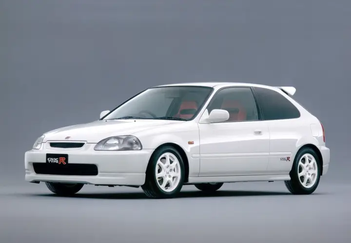
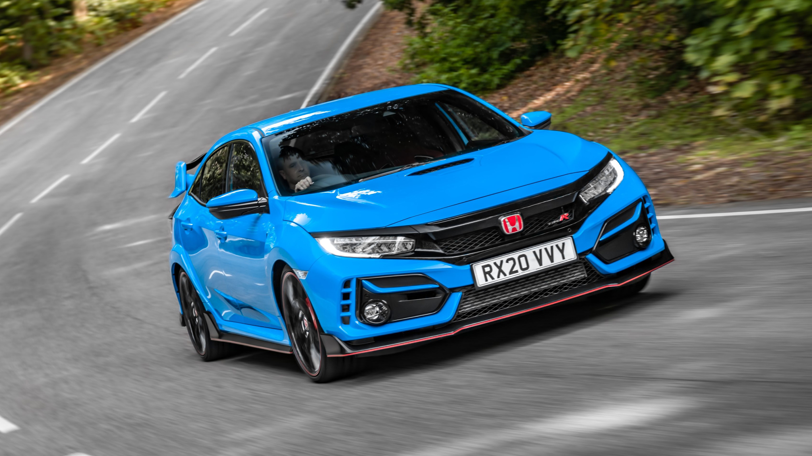

Honda Civic Type R EK9

Essa foi a primeira geração do Civic Type R no mundo, nomeado como EK9. E ficou marcado por seu lendário motor B16 de 4 cilindros dispostos em linha, na transversal de 1.6L. Era capaz de gerar 185hp e atingia 9.000RPM.
Honda Civic Type R FD2
Essa geração, conhecida como FD2, era a versão ainda mais esportiva do icônico Civic Si, o qual possuiu a sigla FA5 em seu nome. O Type R FD2 possuia o glorioso motor K20 de 4 cilindros em linha, 2.0 i-VTEC que vinha do Civic Si, mas agora com mais potência, isto é, 225hp.
Honda Civic Type R FK8

Com muita expectativa, em 2017 a Honda dava vida ao Civic Type R mais ousado de todos os tempos. Seu design com linhas agressivas, entradas de ar chamativas e um aerofólio que dividia opiniões eram pontos altos do modelo. Quanto à motorização, o FK8 possui o mesmo motor K20 do irmão mais velho Si, porém com o acréssimo de um turbocompressor, que o fazia atingir a potência de 330hp.